7월은 월간 명랑사회 콘텐츠 보강을 위해 여러 사람과 소통할 일이 많았다. 필자는 전형적인 INTP에 성인 ADHD를 두루 겸비한 사회성 결여의 성향이 기본 탑재된 정체성이라 한번씩 불쑥 이렇게 지인들에게 아무 거리낌없이 연락을 넣곤 한다. 예컨대 20세기가 마지막이었던 대학동기 연락처를 어쩌다 알게 되어 바로 전화를 하고 마치 어제 만났던 이 마냥 떠들어 댈 수 있으니 말이다.
그렇게 세기를 넘어 다시 열린 대화에서 우리는 모두 오십을 넘겼고, 친구들의 삶에 대한 이야기를 들으며 내가 그들에게 전하는 말은 한 가지로 수렴하고 있었다. 그것은 바로 '중용中庸'이었다.
너무 최선을 다해 열심히 살지 마라. 세상은 니 노력만큼 재깍재깍 돌려 주지 않으니 세상에 대한 상처만 자꾸 쌓인다.
물론 그렇다고 아무렇게나 살라는 이야기는 아니다. 주어진 역량 안에서 자신이 망가지지 않을 정도의 용량을 찾는 과정부터가 쉬운 일은 아니지 않은가? 이 말은 결국 자기 자신의 객관화에 방점이 찍히는 것이다. 즉슨, 할 수 있는 일과 할 수 없는 일을 분별하고 할 수 있는 일을 하되 할 수 없는 일은 스스로도 그렇게 인정할 수 있어야 한다는 것이다. 말이 좀 어려운가? 쉽게 말하자면 할 수 있는 일은 상대적으로 쉽게 느껴지고 할 수 없는 일은 어렵게 느껴지기 때문에, 내가 할 수 있는 일은 100%로 쥐어 짜내지 않아도 세상의 기준을 충족시키기 쉽고 그렇지 않은 일은 자기 자신을 갈아 넣어도 항상 기준 미달의 결과를 갖고 온다고 얘기하면 좀 쉬울까?
그럼에도 해야 하는 일이라고 한다면, 뭐 어쩌겠어. 해야지! 이때는 그냥 납작 엎드려 할 수밖에. 자존심 세우며 현실에 들이 받지 말고 그냥 적당히 비위 맞춰주면서 해야지 어쩌겠어? 그러다 보면 뜻밖에 동병상련을 겪는 좋고 훌륭한 사람들을 얻게 되기도 하니까.
어차피 세상 다 돌고 도는 거, 넘치지도 모자라지도 않게 가늘고 길게 사는 게 정답인데 따지고 보면 이런 적절한 선택을 지속적으로 한다는 거, 그거 쉽지 않은 일이다. 그래서 오늘도 나는 아주 얄팍하고 명랑하게 살기 위해 나를 다그치지 않고 아주 작은 실천에도 나를 칭찬하고 격려하는 중. 이렇게라도 자기 자신과 친해져 보시라. 나 자신을 발견하는 기쁨은 신대륙을 발견하는 것보다 더 기쁠 수도 있을 테니까.— 편집장 (덧. 앞의 INTP 자가진단은 무면허 진단이 아니다 — 편집장은 MBTI분석전문가 1급이다.)
명랑사회연구소
01
월간 명랑사회VOL.02 · 2026.07
FOREWORD
발간사 · 발행인의 말
두 번째 명랑
창간호를 읽어 주신 분들께 감사드린다. "청년은 정말 결혼을 포기했을까"라는 질문으로 시작한 창간호에서 우리는 하나의 문법을 연습했다. 사람의 '마음'을 탓하기 전에, 그 마음이 놓인 '조건'을 데이터로 들여다보는 것.
두 번째 호는 그 문법을 여름 한복판으로 가져온다. 폭염은 흔히 날씨의 문제로, 개인의 대처로 이야기된다. 그러나 죽음의 명단은 무작위가 아니다. 나이와 일과 집과 지역을 따라, 더위의 치명성은 정확하게 쏠린다. 이번 호는 그 쏠림을 끝까지 따라간 기록이다.
아울러 이번 호부터 일곱 개의 코너가 새로 문을 연다. 잡지의 문을 여는 「편집장 왈」, 무릎부터 돌보는 「명랑 건강」, 악보 속 암호를 읽는 「부리의 명랑음악당」, 물건을 호기심으로 들여다보는 「맥시멀리스트의 방」, 전시를 담는 그릇을 읽는 「일본 미술관 건축 산책」, 연구원 데이지 진 님이 밥상의 연구를 맡은 「집밥연구소」, 그리고 여름의 피부를 지키는 「명랑 뷰티」. 무거운 특집 옆에 명랑한 산책로를 두었다. 같은 35도 아래에서, 부디 서늘하고 명랑하게 읽어 주시기를. — 발행인 박지민
이번 호
#
코너
제목
01
NEW 편집장 왈 ①
가늘고 길게, 그러나 명랑하게 — 오십의 중용
03
여는 글
올여름은 왜 더 위험한가
04
데이터 읽기
누가 죽는가 — 폭염의 세 얼굴
05
연구소의 시선 ①
보유는 평등하고, 사용은 불평등하다 (+박스 06)
07
연구소의 시선 ②
폭염의 지도 — 위험의 공간 불평등
08
인포그래픽
한 장으로 보는 폭염 불평등
09
현장·제도
에너지바우처는 그 문 앞에서 멈춘다
10
칼럼
서늘함은 언제 사유재가 되었나
11
맺는 글
위험이 가장 큰 곳에 제도가 닿으려면
12
용어풀이
이번 호의 키워드
13
NEW 명랑 건강 ①
계단은 내려올 때 아프다 — 무릎이 수상해진 중년을 위한 내려가기의 기술
16
연재 · 명랑한 미술관 ②
거장을 보는 또 하나의 눈 — 피카소 meets 폴 스미스
17
NEW 건축 산책 ①
파도 뒤의 원뿔 — 국립신미술관
18
NEW 부리의 명랑음악당 ①
음표에 숨긴 이름들 · 첫 회 — 바흐의 서명과 400곡의 헌정
20
NEW 맥시멀리스트의 방 ①
안경이 통역을 시작했다 — 레이밴 메타
22
NEW 집밥연구소 ①
with 가지 — 여름 가지 레시피 네 접시
24
NEW 명랑 뷰티 ①
무너지지 않는 여름 — 화장을 지키는 1 : 3의 비율
—
NEXT
다음 호 예고 · 판권
명랑사회연구소 · 사회를 명랑하게, 근거로 말합니다
02
특집같은 35도, 다른 여름
PROLOGUE
여는 글
올여름은 왜 더 위험한가
이 잡지가 나오는 7월 하순은 1년 중 가장 위험한 시기다. 지난해(2025년) 온열질환자의 29.0%(1,295명), 사망자의 34.5%가 7월 하순에 집중됐다. 발행월이 곧 위험의 정점이다.
추세도 심상치 않다. 2025년 온열질환으로 응급실을 찾은 사람은 4,460명 — 전년보다 20.4% 늘어 2018년 이후 최다였다. 추정 사망자는 29명.
한 가지를 미리 밝혀 둔다. 이 숫자는 응급실감시체계에 '신고된' 사례만 센 것으로, 여름 더위가 데려가는 죽음의 하한선이다. 폭염 기간의 초과사망(평년 대비 늘어난 사망)을 세면 규모는 훨씬 커진다는 것이 국내외 연구의 일치된 결론이다. 우리가 보는 것은 빙산의 꼭대기다.
그러니 질문을 바꾸자. '올여름은 얼마나 더운가'가 아니라 — '같은 더위 아래에서, 누가 위험한가.'
출처: 질병관리청 「2025년 온열질환 응급실감시체계 운영 결과」(2025.10)
명랑사회연구소
03
특집같은 35도, 다른 여름
DATA
데이터 읽기 · 리포트 ①
누가 죽는가 — 폭염의 세 얼굴
62.1%
나이 — 사망자 29명 중 18명이 60세 이상. 치명성은 노인에게 쏠린다.
26.0%
일 — 환자 최다 직업은 단순노무(1,160명). 실외 발생이 79.2%, 실내의 3.8배.
5.2배
지역 — 10만 명당 신고환자 전남 21.4명 vs 서울 4.1명. 농촌·고령 지역 응집.
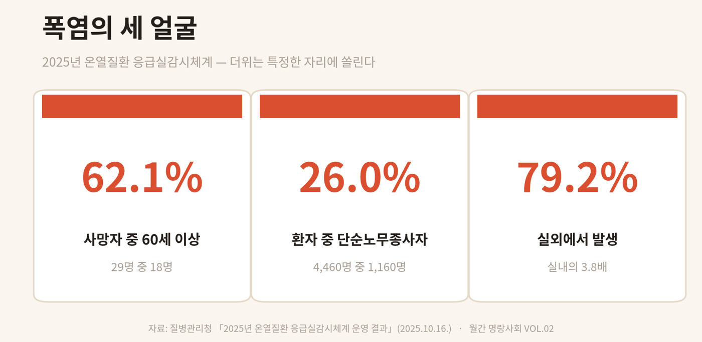
인포그래픽 ① 폭염의 세 얼굴 — 나이·일·지역
더위는 이 세 자리에 정확히 내려앉는다. 우연이 아니다. 나이와 일과 집과 소득이 만든 구조를 따라, 더위의 치명성은 분포한다.
출처: 질병관리청(2025). 직업·발생장소 비율은 환자 전체 기준(사망자 기준과 다름).
명랑사회연구소
04
특집같은 35도, 다른 여름
ANALYSIS ①
연구소의 시선 ① · HEPS 6,311가구 자체 분석
보유는 평등하고, 사용은 불평등하다
"가난한 집에는 에어컨이 없다"는 통념부터 걷어내자. 월소득 200만 원 미만 가구의 에어컨 보유율은 88.3% — 600만 원 이상 가구(94.6%)와의 격차는 보유대수 기준 1.27배에 그친다. 진짜 격차는 스위치에 있다. 연간 사용량은 292kWh 대 629kWh, 2.15배. 에어컨을 가진 가구만 비교해도 격차는 2배다. 가난한 집에도 에어컨은 있었다. 다만 켜지 못했을 뿐이다.
인포그래픽 ② 보유는 평등에 가깝고, 사용은 불평등하다
이 사용의 격차를 죽음의 격차 위에 포개면 서늘한 정렬이 나타난다. 에어컨을 가장 덜 켜는 60세 이상(연 366kWh, 40대의 58%)이 사망자의 62.1%를 차지한다. 노인 1인가구는 연 272kWh — 다른 가구의 절반. 33㎡ 미만 주택은 132㎡ 이상의 절반 남짓(1.9배 격차)을 켠다.
미리 답해 둘 것이 있다. 이 정렬은 인과의 증명이 아니라 구조의 증거다 — 같은 자리에 나이·소득·주거·고립이라는 취약성이 겹겹이 쌓여 있다는. 그리고 이 표본조차 닿지 못하는 주거(쪽방·고시원)가 있으므로, 여기 적은 격차는 최소치다.
출처: 에너지경제연구원 가구에너지패널조사(HEPS) 13차(2022년 기준) 마이크로데이터, 연구소 자체 분석(가구가중치 적용). 연간 사용량은 정격소비전력 기반 추정치로, 절대값보다 집단 간 격차로 읽는 것이 정확하다. 에너지총조사(2020)에서도 같은 격차가 확인된다.
명랑사회연구소
05
특집같은 35도, 다른 여름
ANALYSIS ① BOX
박스 · 이 특집의 심장
에어컨은 열을 없애지 않는다, 옮길 뿐이다
에어컨은 실내의 열을 실외로 토해내는 기계다. 그 열은 두 갈래로 청구된다. 실외기의 폐열은 골목을 데우고(외기 35℃일 때 토출 공기 약 60℃ — 현장 보도 기준), 냉방 전기를 만드는 발전소는 멀리서 열과 탄소를 배출한다(2023년 전력배출계수 0.417kgCO₂/kWh).
인포그래픽 ③ 이중 전가 — 골목의 실외기, 저곳의 발전소
Salamanca et al. (2014), JGR: Atmospheres
애리조나주립대 연구진의 피닉스 시뮬레이션 — 에어컨 폐열은 낮에는 지표 부근에 거의 흔적을 남기지 않지만, 밤에는 일부 도심의 기온을 1℃ 이상 끌어올렸다. 더워진 밤은 다시 에어컨을 부른다(양의 되먹임). 켜는 사람과 떠안는 사람이 다르다는 것 — 그것이 이 특집이 '수탈'이라는 단어를 꺼내는 이유다.
한여름 열대야의 1도는 가볍지 않다. 그 1도가 누군가에게는 잠들 수 있는 밤과 잠들 수 없는 밤을 가른다.
명랑사회연구소
06
특집같은 35도, 다른 여름
ANALYSIS ②
연구소의 시선 ② · 공간 불평등
폭염의 지도 — 위험의 지도와 냉방의 지도가 어긋난다
시도
10만 명당 신고환자
에어컨 연 사용량(kWh)
60세 이상 가구
전남
21.4명 (최고)
301.0 (하위권)
62.1%
울산
16.9명
328.7
51.4%
경북
16.9명
335.2
71.7%
서울
4.1명 (최저)
539.2 (상위권)
30.0%
신고 위험은 전남이 서울의 5.2배인데, 에어컨 사용량은 전남이 서울의 56%다. 시도별 사용량 격차는 강원(238.6) 대 경기(610.9), 2.56배 — 소득 격차(2.15배)보다 크다. 가장 덥다는 대구조차 서울의 73%만 켠다.
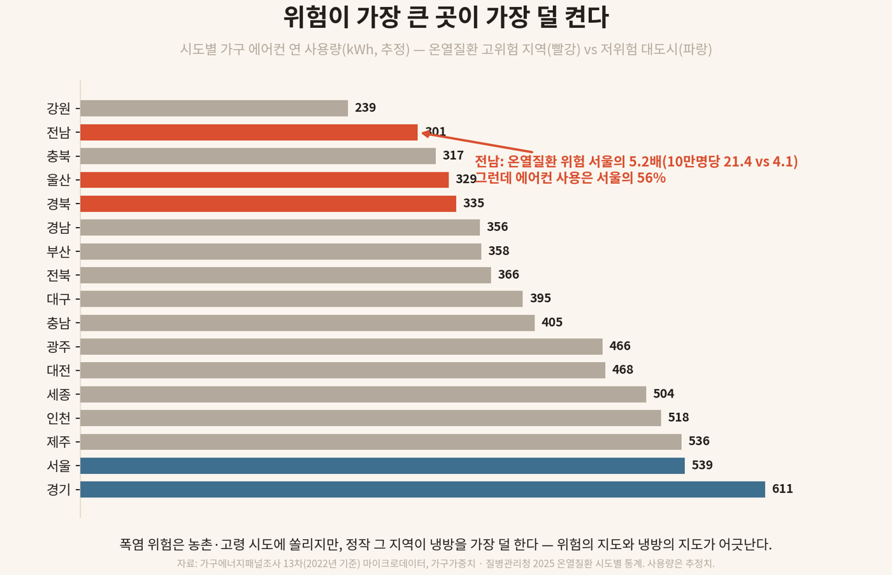
인포그래픽 ④ 위험의 지도 vs 냉방의 지도
이 어긋남 앞에서 수탈의 논증을 공간에 맞게 접자. 골목의 폐열은 도시의 밤을 데우고, 발전소의 탄소는 농촌의 여름을 데운다. 두 경로 모두에서 시원함의 비용은 켜지 못한 자에게 청구된다.
출처: HEPS 13차 시도별 연구소 자체 분석 · 질병관리청(2025). 신고율과 사용량의 관계는 상관관계로, 인과로 읽지 않도록 유의.
명랑사회연구소
07
특집같은 35도, 다른 여름
INFOGRAPHIC
인포그래픽 · 한 장으로 보는 폭염 불평등
가장 못 켜는 사람이, 가장 많이 죽는다
인포그래픽 ⑤ 사용의 격차 × 죽음의 격차 — 같은 자리에 포개진다
272kWh
노인 1인가구의 연간 에어컨 사용량 — 다른 가구(527kWh)의 절반.
1.9배
전용 33㎡ 미만(333kWh) 대 132㎡ 이상(632kWh) — 좁고 더운 집일수록 덜 켠다.
338kWh
사글세·무상 거주 가구의 사용량. 자가(471kWh)보다 월세(376kWh)가, 그보다 더 못 켠다.
명랑사회연구소
08
특집같은 35도, 다른 여름
FIELD
현장·제도 · 리포트 ②
에너지바우처는 그 문 앞에서 멈춘다
우리 사회가 더위에 맞서 가진 거의 유일한 복지 장치, 에너지바우처. 2026년 지원액은 1인 세대 연 295,200원으로 인상됐고 대상은 차상위계층 전체로 넓어졌으며 계절별 사용 한도도 폐지됐다. 분명한 진전이다. 그러나 이 제도는 두 개의 문턱에서, 정작 가장 위험한 사람을 걸러낸다.
첫째 문턱 — 자격
소득 기준(수급자)과 인구학적 요건(노인·영유아·장애인 등)의 이중 관문. 그러나 더위의 위험은 수급 경계를 따라 분포하지 않는다. 조문영이 『빈곤 과정』에서 지적했듯, 빈곤을 '수급'이라는 컨테이너에 격리하면 그 바깥의 위험은 보이지 않게 된다.
둘째 문턱 — 신청주의
바우처는 자동으로 오지 않는다. 이 한 줄의 절차가 정보·접근성이 약한 사람을 정확히 거른다. 바우처 미사용액의 64.7%가 1인가구에서 발생했다(2022 국감). 중위소득 45% 이하 가구의 에너지빈곤율은 58.7% — 연구자들의 제언은 한결같다. 인구학적 기준을 폐지하고, 위험 그 자체에 제도를 맞추라.
그리 오래되지 않은 여름의 풍경을 떠올려 본다. 정자나무 그늘, 우물가의 등목, 해가 지면 골목에 내놓던 평상. 서늘함은 마을이 함께 가진 것이었다. 좋은 그늘은 누군가의 소유가 아니었고, 밤의 서늘한 공기는 값을 치르고 사는 물건이 아니었다. 부자와 빈자의 여름이 지금처럼 다르지 않았던 것은, 그때가 더 평등한 시대여서가 아니라 서늘함이 아직 시장 바깥에 있었기 때문이다.
에어컨은 그 관계를 뒤집었다. 서늘함은 방 단위로 쪼개져 상품이 되었고, 상품이 된 서늘함은 소득의 함수가 되었다. 이번 호가 확인한 2.15배의 사용 격차는 그 함수의 기울기다. 여기까지라면 서늘함은 여느 재화와 다를 게 없다. 자동차를 더 좋은 것으로 타고, 외식을 더 자주 하는 것처럼, 더 시원한 여름을 사는 것뿐이다.
그러나 서늘함은 여느 재화와 결정적으로 다르다. 한 방의 서늘함은 제 비용의 일부 — 폐열과 탄소 — 를 값을 치른 사람이 아니라 모두의 대기에 지불하게 한다. 사적으로 소비되고 공적으로 청구되는 상품. 그래서 서늘함의 사유화가 진행될수록 그것을 사지 못한 사람의 여름은 그만큼 더 뜨거워진다. 평상과 등목의 시대로 돌아가자는 말이 아니다. 이 거래의 장부가 정직하게 적히고 있는지 묻자는 말이다.
그렇다면 폭염 대책의 질문도 달라져야 한다. "취약계층이 어떻게 견디게 할까"는 절반의 질문이다. 나머지 절반은 "사지 않아도 누리는 서늘함의 몫을 어떻게 되돌릴까"다. 가로수와 그늘막, 단열이 되는 집, 문턱 없는 무더위쉼터 — 서늘함의 공공 지분이 커질수록 폭염은 덜 치명적인 계절이 된다. 원래 여름밤은, 모두의 것이었다.
명랑사회연구소
10
특집같은 35도, 다른 여름
CONCLUSION
맺는 글 · 정책 제언
위험이 가장 큰 곳에 제도가 닿으려면
하나 — 제도를 위험에 정렬한다
신청주의를 직권·자동 지급으로 바꾸고, 수급 경계에 갇힌 자격을 위험 기반으로 넓힌다. 위험의 절반은 일터에 있다 — 폭염 작업중지 기준과 휴게 보장을 실질화해, 실외 79.2%의 발생 현장에 제도가 먼저 도착하게 한다.
둘 — 부담을 일으킨 자에게 비용을 청구한다
오염자 부담 원칙의 일차 과녁은 상업·산업 냉방과 전력 생산 구조다. 개문냉방 규제의 실효화, 탄소가격의 정직한 반영, 가정용 내 다소비 구간의 정교화(대가족·병약자 가구는 예외 설계). 그 재원으로 취약계층의 여름을 보전하는 순환 — 시원함을 누린 자의 비용으로, 누리지 못한 자의 안전을 산다.
셋 — 냉방을 권리로 선언한다
적정 실내온도를 유지할 능력은 보편적 기본 서비스의 일부다. 다만 냉방권은 에어컨의 권리가 아니라 서늘한 집의 권리다. 주거 단열 개보수(세입자-집주인의 어긋난 유인 교정), 패시브 냉방과 그린인프라, 실질적 공공냉방까지 — 켜지 않고도 서늘할 수 있는 조건을 함께 보장해야 한다.
더위는 평등하지 않았다. 그러나 책임은 평등하게 물을 수 있고, 제도는 평등하게 닿을 수 있다.
명랑사회연구소
11
특집같은 35도, 다른 여름
GLOSSARY
용어풀이
이번 호의 키워드
용어
풀이
온열질환
열사병·열탈진 등 더위가 직접 원인인 질환. 응급실감시체계로 집계된다.
응급실감시체계
참여 의료기관 응급실 신고 기반 집계 — 전수조사가 아니라 '하한선'이다.
초과사망
폭염 기간에 평년 대비 늘어난 사망. 감시체계 숫자보다 훨씬 크다.
부정적 외부효과
행위의 비용이 시장을 거치지 않고 제3자에게 전가되는 것. 실외기의 폐열.
오염자 부담 원칙
부담을 일으킨 자가 비용을 진다(OECD 1972, 환경정책기본법 제7조).
도시 열섬
도심이 교외보다 뜨거워지는 현상. 여름 표면온도 차 평균 2~4℃, 밤에 더 강하다.
에너지바우처
냉·난방 에너지 비용 지원 이용권. 2026년 1인 세대 연 295,200원.
차상위계층
수급 기준 바로 위의 저소득층. 2025.11부터 바우처 대상 포함.
에너지빈곤율
중위소득 45% 이하 가구는 58.7%(광열수도비 기준, 2022).
냉방권
적정 실내온도를 유지할 권리. '에어컨의 권리'가 아니라 '서늘한 집의 권리'.
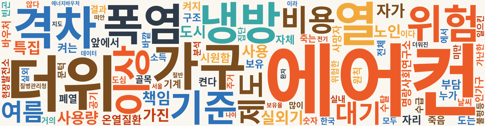
이번 호 특집 본문에서 자주 등장한 말들
명랑사회연구소
12
신설 코너명랑 건강 ① — 데이터로 읽는 몸
NEW · HEALTH
NEW · 명랑 건강 ① — 데이터로 읽는 몸
계단은 내려올 때 아프다 무릎이 수상해진 중년을 위한 내려가기의 기술
계단 앞에서 무릎이 먼저 아는 날이 있다. 어제 많이 걸었거나, 나이 앞자리가 바뀌었거나, 한 번쯤 무릎에 물이 차 봤다면 — 오르막보다 내리막이 겁난다는 것을 몸이 먼저 안다. 엄살이 아니다. 역학적으로 근거가 있는 이야기다. 오늘은 왜 하필 내려올 때 아픈지, 그리고 어떻게 내려가야 무릎이 덜 억울한지를 다룬다.
오를 땐 심장이, 내려올 땐 무릎이
계단을 오르는 동작은 근육이 짧아지며 몸을 밀어 올리는 구심성 수축이다. 숨이 차고 허벅지가 뻐근하니 힘든 줄 바로 안다. 내려오는 동작은 반대다. 근육이 길어지면서 떨어지는 몸의 속도를 버티는 원심성 수축 — 허벅지 앞 대퇴사두근이 브레이크를 잡는다. 조용해 보이지만, 이 브레이크에 걸리는 힘이 만만치 않다.
계단 보행 역학 연구(McFadyen & Winter, 1988 등)에 따르면, 내려올 때 무릎 앞쪽 슬개대퇴 관절에 실리는 부하는 평지 걷기의 약 두 배. 오를 때는 숨이 차서 힘든 줄 알지만, 내려올 때의 부담은 통증이 쌓인 뒤에야 알아챈다. 무릎 통증이 유독 '계단 내려올 때' 먼저 신호를 보내는 이유다.
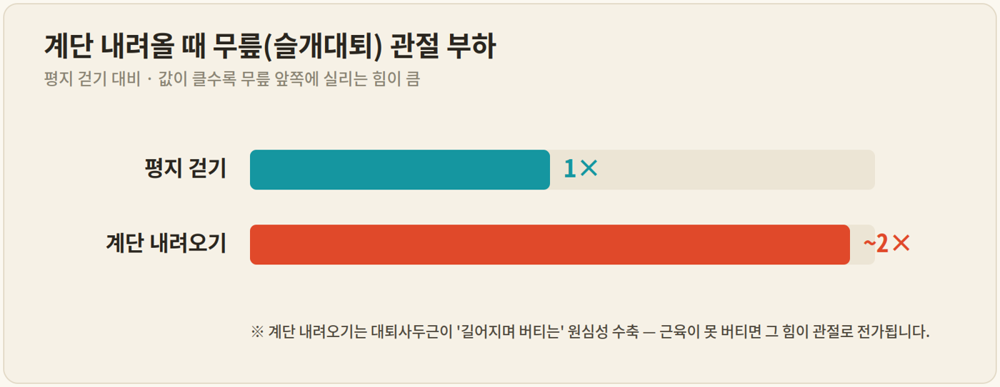
[그림 1] 계단 내려오기의 무릎 관절 부하는 평지 걷기의 약 2배
오를 땐 심장이 힘들고, 내려올 땐 무릎이 힘들다.
명랑 건강 — 데이터로 읽는 몸
13
신설 코너명랑 건강 ① — 데이터로 읽는 몸
NEW · HEALTH
계단은 내려올 때 아프다 — 이어서
계단의 주역들
계단에서 일하는 근육을 알아 두면 관리가 쉬워진다. 주역은 단연 대퇴사두근 — 오르기·내려오기 모두를 책임진다. 둔근은 오를 때 몸통을 끌어올리고, 종아리는 밀어 올리며 착지를 조절하고, 앞정강근은 발끝을 들어 다음 칸에 정확히 얹게 한다. 경사로가 엉덩이·허벅지의 일이라면, 계단은 무릎의 일이다 — 접었다 펴는 각도가 큰 만큼 부하가 무릎으로 모인다.
그러니 무릎을 지키는 열쇠도 근육에 있다. 대퇴사두근이 튼튼할수록 브레이크가 부드럽게 걸리고, 관절 대신 근육이 힘을 받아 낸다.
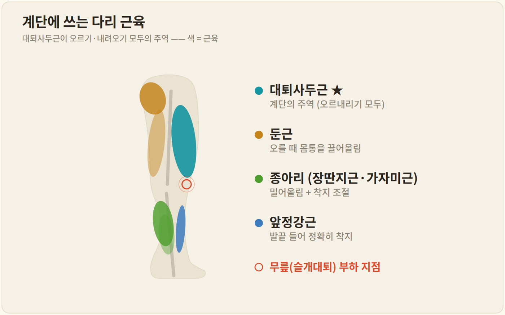
[그림 2] 계단에 쓰는 다리 근육 — 대퇴사두근(청록)이 주역
힘은 발끝에서 무릎으로 흐른다
내려서는 한 걸음 동안 몸에는 두 개의 힘점이 생긴다. 먼저 내딛는 발의 발볼이 착지 충격을 처음 받아 내고(힘점 ②), 그 사이 위 칸에서 버티는 다리의 무릎 앞(슬개대퇴 관절)에는 몸을 천천히 내려놓느라 평지의 약 2배 하중이 걸린다(힘점 ①). 충격이 발볼 → 발목 → 종아리 → 허벅지 순서로 아래에서 위로 나뉘어 흐를수록 무릎이 홀로 받는 몫이 줄어든다 — 다음 면의 '앞발 착지'가 중요한 이유다.
[그림 3] 내려서는 한 걸음의 두 힘점 — 앞발이 일해야 무릎이 덜 일한다
명랑 건강 — 데이터로 읽는 몸
14
신설 코너명랑 건강 ① — 데이터로 읽는 몸
NEW · HEALTH
계단은 내려올 때 아프다 — 실전편
무릎을 아끼는 내려가기 다섯 가지
앞발(볼)부터 딛는다 — 힘점 ②가 먼저 일하게 해서, 발목과 종아리가 충격을 흡수한다.
무릎은 잠그지 말고 부드럽게 조금 굽힌 채 내려간다.
체중을 쿵 싣지 말고, 뒷발 쪽 허벅지로 천천히 몸을 내려앉힌다 — 힘점 ①의 하중을 근육이 받아 낸다.
힘든 날엔 한 칸에 두 발씩, 난간은 당당하게 쓴다.
평소엔 스텝다운 운동 — 낮은 계단에서 한 발로 천천히 내려서는 연습이 대퇴사두근의 브레이크 힘을 그대로 길러 준다.
어릿광대 의상 무늬가 벽으로 번진 방. 폴 스미스의 공간 연출 (직접 촬영, 2026.6)
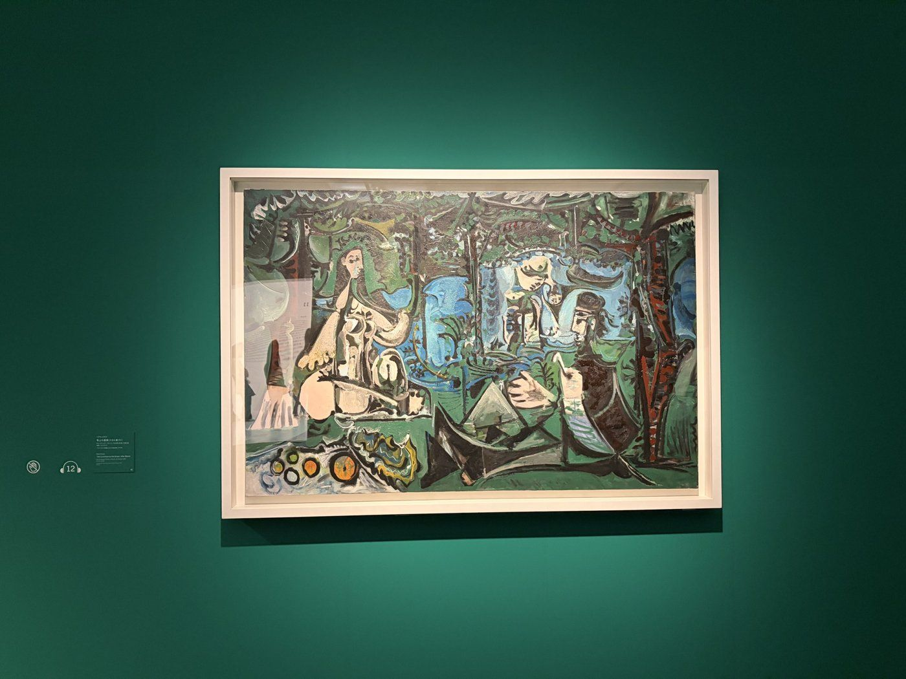
《풀밭 위의 점심》 연작의 방 — 바닥까지 초록
전시장에 들어서자마자 알았다. 이번에 보러 온 것은 피카소만이 아니라는 것을. 하늘색 벽의 긴 복도에 노란 문틀이 리듬처럼 박혀 있었다. 파리 국립피카소미술관 소장품 약 80점을, 폴 스미스가 공간째로 다시 디자인한 전시다.
그 개입은 장식이 아니라 해석이었다. 어릿광대로 분한 파울로의 초상은 어릿광대 의상 무늬 그대로인 다이아몬드 벽 위에 걸렸다. 투우의 방은 통째로 투우장의 빨강, 마리테레즈의 방은 폴 스미스의 서명 같은 스트라이프 — 1930년대에 이미 줄무늬로 연인을 그렸던 피카소에게 보내는, 줄무늬 디자이너의 답장.
마지막 방, 전시 포스터 수백 장의 벽 앞에서 이 전시의 진짜 주제가 보였다. 우리는 피카소를 '본' 적이 있는가, 피카소라는 '이미지'를 학습해 온 것인가. 경건함을 걷어내고 유희를 입히자, 역설적으로 피카소가 평생 해 온 일 — 놀이라는 방법론 — 이 선명해진다. 큐레이션이 곧 비평이 될 수 있음을 이만큼 명랑하게 증명하는 사례를 나는 알지 못한다.
데이터로 사회를 읽는 일도 같은 작업인지 모른다. 같은 자료라도 어떤 벽에 거느냐에 따라 다른 것이 보인다. 이번 호에서 폭염을 '날씨'의 벽에서 떼어 '불평등'의 벽에 다시 건 것처럼.
관람 정보
국립신미술관 기획전시실 2E (롯폰기) · ~2026.9.21 · 화 휴관(8/11 개관, 8/12 휴관) · 10:00~18:00, 금·토 ~20:00 · 당일 일반 2,400엔 · 노기자카역 6번 출구 직결
이번 호 미술기행의 무대인 국립신미술관은, 전시를 보기 전부터 이미 하나의 전시다. 롯폰기의 초록 사이로 유리 파사드가 파도처럼 굽이친다. 설계자는 구로카와 기쇼(1934-2007) — 건축을 생물처럼 갱신되는 신진대사로 사고한 '메타볼리즘'의 기수. 이 미술관은 2007년 개관, 그가 세상을 떠난 해에 문을 연 사실상의 유작이다.
안으로 들어서면 진짜 주인공이 나타난다. 거대한 역원뿔 두 기가 아트리움에서 솟아오르고, 그 꼭대기가 카페다. 커피를 마시는 사람들이 공중의 원뿔 위에 떠 있고, 물결치는 유리가 흘려보낸 빛이 콘크리트 곡면을 타고 내려온다.
또 다른 급진성은 보이지 않는다. 소장품이 없다. 기획전과 공모전만으로 운영되는 '빈 그릇'의 미술관 — 일본 최대급 14,000㎡를 '무엇이든 담길 수 있는 상태'로 비워 둔다. 갱신을 꿈꾼 메타볼리스트의 마지막 건물이 '계속 교체되는 미술관'이라는 결말.
폭염의 계절에 한 가지 더. 이 유리 파사드는 전시동과의 사이에 완충 공간을 둔 이중 외피로, 여름의 열부하를 줄이도록 설계됐다. 원뿔 위 카페에서 유리 한 장 너머의 35도를 바라보는 경험 — 특집을 읽고 나면 그 시원함이 조금 다르게 느껴질지도 모른다.
산책 메모 — 노기자카역 6번 출구 직결, 한여름에도 땀 없이 도착. 공식 건축 가이드 앱 'CONIC'으로 셀프 투어 가능.
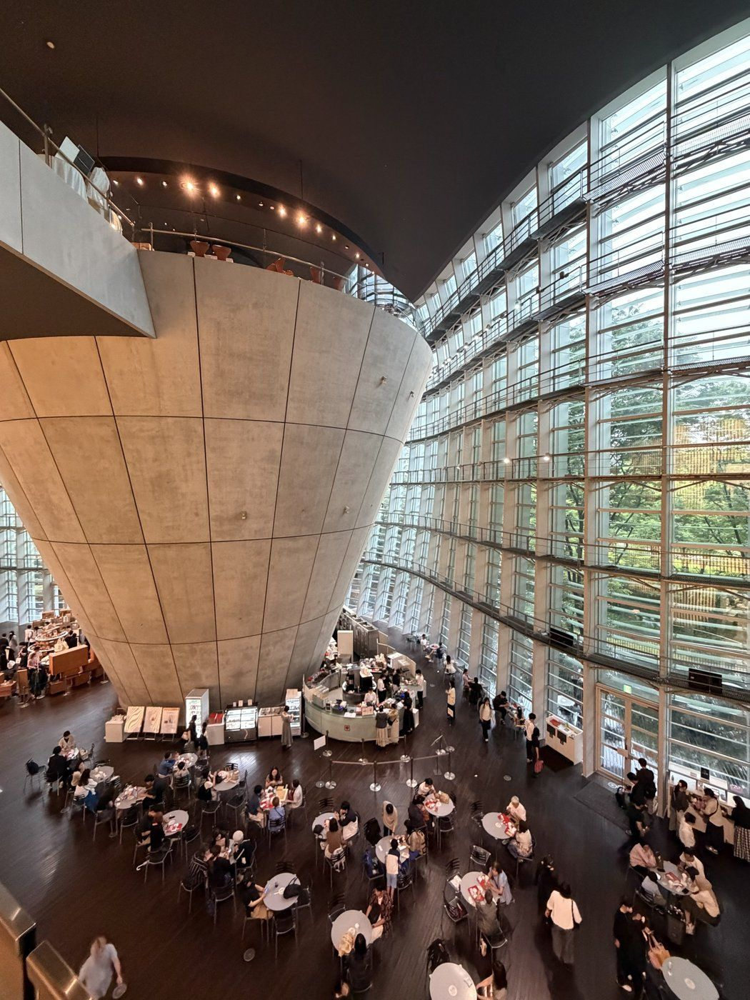
아트리움의 역원뿔 — 꼭대기가 카페다
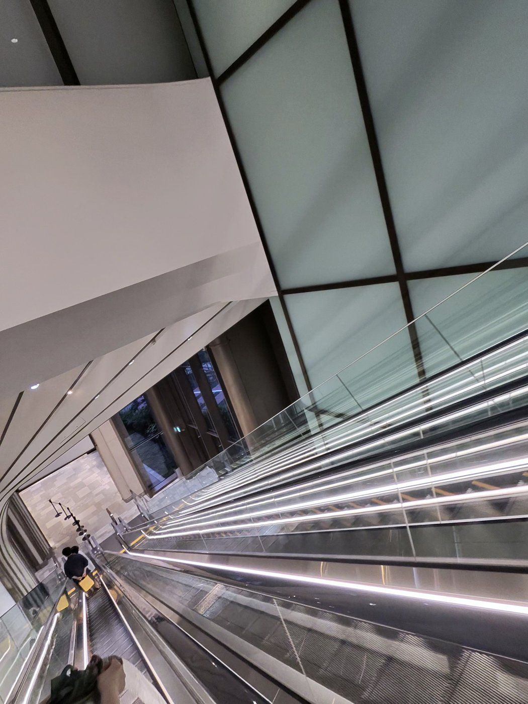
파사드 안쪽, 빛의 완충 공간
글·사진: 편집장 박지민 — 전시보다 먼저 건물이 말을 걸 때가 있다. 「일본 미술관 건축 산책」은 전시를 담는 그릇을 읽는 코너다.
다음 호 — ② 모리미술관과 롯폰기 힐스, '수직 도시' 위의 미술관
17
신설 코너부리의 명랑음악당 ①
NEW · MUSIC
NEW · 부리의 명랑음악당 ① — 악보 속으로
음표에 숨긴 이름들 클래식 악보 속 이름 암호 해독기 · 첫 회 — 바흐의 서명
작곡가들에게는 오래된 장난이 하나 있다. 악보 속에 이름을 묻어 두는 것이다. 규칙은 간단하다. 독일식 음이름에서는 알파벳이 곧 음표다 — A(라)부터 G(솔)까지, 여기에 독일어만의 두 글자가 더해진다. B는 시♭, H는 시. 그리고 Es(미♭)는 발음이 알파벳 S와 같다. 이 규칙만 있으면 이름 철자를 선율로 바꿀 수 있다. 이 연재는 그렇게 밀봉된 암호들을 한 회에 하나씩 연다. 첫 회는 당연히, 이 놀이의 발명자 — 바흐다.
자기 이름이 선율이 되는 행운
요한 제바스티안 바흐(J. S. Bach)의 성은 네 철자가 전부 음이 된다 — 시♭(B), 라(A), 도(C), 시(H). 이건 아무에게나 오는 행운이 아니다(모차르트의 M도, 베토벤의 V도 음이 아니다). 게다가 이 네 음은 반음으로 비틀리며 감기는, 묘하게 애수 어린 선율이 된다. 네 음을 잇는 선이 악보 위에서 십자 모양을 그린다 하여 십자가의 상징으로 읽는 해석도 있다. 동시대인들도 이 행운을 알았다. 1732년 발터의 『음악사전』은 이렇게 적었다. "b-a-c-h 철자는 그 순서대로 하나의 선율이 된다. 이 특이함은 라이프치히의 바흐 씨가 발견했다." 발견자가 본인으로 등재된, 역사상 가장 짧은 특허인 셈이다.
서명하다 멈춘 악보
바흐는 이 서명을 아껴 두었다가 생애 마지막 대작에 꺼내 들었다. 「푸가의 기법」의 마지막 미완성 푸가 — 세 개의 주제가 차례로 쌓이는 이 거대한 푸가에서, 세 번째 주제로 등장하는 것이 바로 B-A-C-H 네 음이다. 그리고 악보는 그 서명이 울리기 시작한 대목에서 끊긴다. 아들 카를 필리프 에마누엘은 그 악보 여백에 이렇게 적어 두었다. "B-A-C-H의 이름이 대주제로 등장하는 이 자리에서, 작곡가는 세상을 떠났다." 실제 집필 시점을 두고는 학자들의 논쟁이 있지만, 어느 쪽이든 남은 그림은 같다 — 자신의 이름을 서명하다 펜을 놓은 작곡가. 연구자들은 바흐의 베이스라인 곳곳에서도 이 네 음을 발견한다. "우연이라기엔 너무 자주 나온다"는 것이 중론이다.
가장 짧은 자서전은, 네 개의 음표였다.
부리의 명랑음악당 — 악보에도 근거를
18
신설 코너부리의 명랑음악당 ①
NEW · MUSIC
음표에 숨긴 이름들 — 첫 회, 이어서
부활, 그리고 400곡의 헌정
바흐가 죽자 서명도 함께 잊혔다. 다시 울리기 시작한 것은 19세기 — 멘델스존이 「마태수난곡」을 79년 만에 되살린(1829) 뒤, 낭만주의자들은 바흐를 재발견하며 그의 이름 네 음을 헌정의 언어로 삼았다. 집계된 것만 330여 명의 작곡가, 약 400곡. 한 사람의 이름 네 글자가 이만큼 연주된 예는 음악사에 다시 없다.
연도
작곡가
B-A-C-H 오마주
1845
슈만
「B-A-C-H 주제에 의한 여섯 개의 푸가」 Op.60 — 클라라와 함께 바흐 대위법을 수련하던 해의 결실
1855
리스트
「B-A-C-H 주제에 의한 환상곡과 푸가」 — 오르간을 폭풍처럼 몰아치는 비르투오소의 경배
1856
브람스
푸가 A♭단조 WoO 8 — 스물세 살 청년의 습작 속 서명
1878
림스키코르사코프
「B-A-C-H 주제에 의한 여섯 개의 변주곡」
1928
쇤베르크
「관현악을 위한 변주곡」 Op.31 — 12음 기법의 한복판에 새긴 서명
1938
베베른
현악 4중주 Op.28 — 음렬 자체를 B-A-C-H로 설계
1964
아르보 페르트
「B-A-C-H 콜라주」 — 20세기의 소음 속에서 바흐를 호출
특히 리스트의 환상곡과 푸가는 이 계보의 정점이다. 경건한 인용이 아니라, 네 음을 화산처럼 폭발시키는 낭만주의식 경배 — 바흐의 서명이 헌정자의 언어로 얼마나 다르게 발음될 수 있는지 보여 준다. 그러니 이렇게 말해도 좋겠다. 죽은 지 276년, 바흐는 아직도 신곡에 참여하고 있다. 이름 넉 자로.
해독 연습 — 당신의 이름도 선율이 된다
규칙 A~G는 그대로, B=시♭ · H=시 · S(Es)=미♭ · 나머지 철자는 건너뛴다
이름을 로마자로 적는다 — 예: DAISY(데이지) → D·A·(I)·S·(Y) → 레-라-미♭. 집밥연구소 데이지 진 님은 세 음짜리 모티프였다.
음이 되는 철자가 하나도 없다면? 낙심 금지 — 다음 회의 작곡가들이 우회하는 법을 알려 준다.
완성된 모티프를 흥얼거려 본다 — 다음 호에 독자 이름 암호를 악보로 실어 드린다. 제보: justice_park@kakao.com
글: 부리 도니꼬(Buri Donicco) — 음악당 지기 다음 회 — 연인의 이름을 숨긴 사람들: 슈만의 아슈, 브람스의 아가테.
참고: J. G. 발터 『음악사전』(1732) · 바흐 「푸가의 기법」 BWV 1080 · 슈만 Op.60 · 리스트 「B-A-C-H 환상곡과 푸가」(1855) · 쇤베르크 Op.31 · 베베른 Op.28 · 페르트 「콜라주」(1964)
부리의 명랑음악당 — 악보에도 근거를
19
신설 코너맥시멀리스트의 방 ①
NEW · GADGET
NEW · 맥시멀리스트의 방 ① — 왕년의 '네이버 오늘의 블로거'가 다시 꺼내 든 리뷰 노트
안경이 통역을 시작했다 레이밴 메타 AI 글라스
근거로 세상을 읽는 게 이 잡지의 일이지만, 물건 앞에서는 언제나 호기심이 근거보다 빠르다. 그런 사람에게 2026년 여름은 조금 특별하다. 지난 5월 25일, 레이밴 메타와 오클리 메타 AI 글라스가 한국에 정식 출시됐다. 그리고 지난 7월 6일, 한국어 실시간 번역 업데이트가 도착했다. 상대의 말을 안경 다리의 오픈이어 스피커가 우리말로 통역해 들려준다. 지원 언어는 6개에서 20개로. 해외 직구와 영어 메뉴를 감수하던 시절을 지나, 드디어 '내 언어로 쓰는' 스마트 글라스가 된 것이다. 편집장의 수집 서랍에도 한 자리가 생겼다.
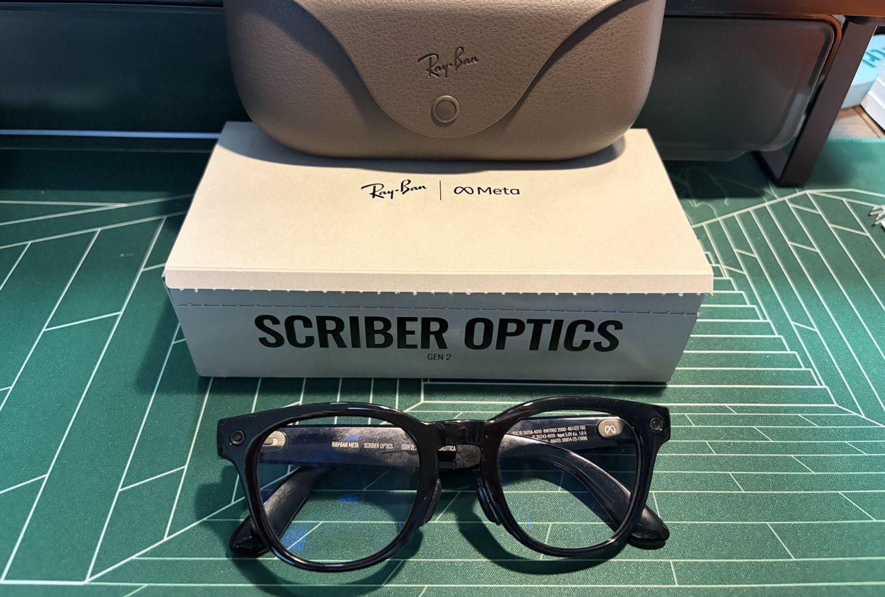
안경원 상자, 가죽 케이스, 그리고 그냥 레이밴처럼 생긴 안경 (직접 촬영)
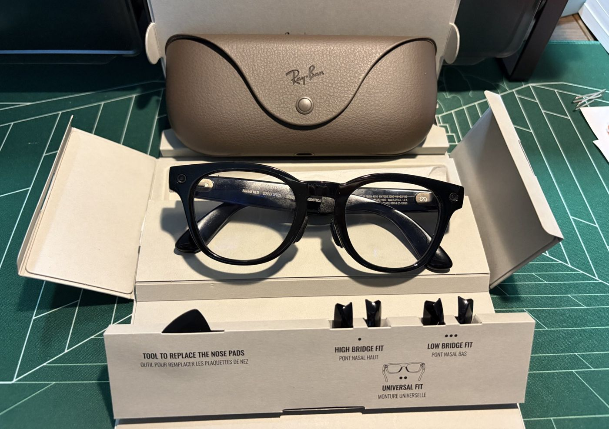
구성품 — 브리지 높이별 노즈패드 교체 키트까지 들어 있다
생김새는 그냥 레이밴이다. 웨이페어러 프레임에 1,200만 화소 초광각 카메라와 스피커, 마이크가 숨어 있다. 본 것을 그대로 찍고(3K 영상), 들은 것을 번역하고, "헤이 메타"라고 부르면 눈앞의 사물에 대해 답한다. 손이 자유롭다는 것 — 이것이 스마트폰과의 결정적 차이다. 자전거 위에서, 시장에서, 아이 손을 잡은 채로.
20개
실시간 번역 지원 언어 — 2026.7 업데이트로 한국어 포함.
$799
윗급 '메타 레이밴 디스플레이'(미국) — 렌즈 속 화면+근전도 밴드. 국내 미출시.
6시간
디스플레이 모델의 배터리 — "가장 착용할 만한, 그러나 아직 얼리어답터의 물건."
물건을 오래 모아 온 사람의 직감으로 말하자면, 이 물건의 서사는 어디서 본 적이 있다. 시계가 그랬고 이어폰이 그랬다 — '굳이?'라는 반문과 함께 등장해, 어느 날 몸의 일부가 되어 있는 물건들. 안경은 이미 하루 종일 얼굴 위에 있다는 점에서 출발선이 다르다. 남은 질문은 기술이 아니라 예절이다. 카메라가 달린 안경과 마주 앉는 사회의 규칙을, 우리는 이제부터 만들어야 한다. 촬영 중 흰색 LED가 켜지도록 설계된 것이 그 규칙의 첫 문장일 것이다. 그렇다면 이 안경, 지금 쓸 만한 물건인가 — 직접 시험해 본 기록이 다음 장에 있다.
출처: Meta 뉴스룸(2026.5) · 국내 보도(2026.7) · Road to VR
맥시멀리스트의 방 — 물건에도 근거를
20
신설 코너맥시멀리스트의 방 ①
NEW · GADGET
NEW · 맥시멀리스트의 방 ① — 실사용 노트
안경에게 토익을 맡겨 보았다 그래서, 지금 살 만한가 — 편집장의 사용 후기
실험은 소박하게 시작했다. 책상에 토익 문제집을 펴 놓고 안경에게 부탁했다. "헤이 메타, 지금 보고 있는 페이지의 문제를 풀어줘." 안경은 잠시 페이지를 내려다보더니 답을 불러 주기 시작했다. 151번은 (B), 152번은 (C). 목소리에는 망설임이 없었다.
문제는 디테일이었다. 근거라며 읽어 주는 지문 속 고유명사들이 어딘가 낯설었다. 큰 제목은 곧잘 읽지만 본문의 잔글씨 앞에서는 정확도가 뚝 떨어지고, 못 읽은 자리는 그럴듯한 말로 메워 놓는다. 그리고 자신 없다는 말은 끝내 하지 않는다. 작은 글씨 텍스트 인식은 아직 이 안경의 약한 무릎이다. 번역기로, 그러니까 글자를 읽는 눈으로 쓰기에는 아직 많이 모자라다. 이 완벽한 폼팩터에 다른 AI 모델을 끼워 쓸 수 있다면 얼마나 좋을까, 하는 생각이 자꾸 든다.
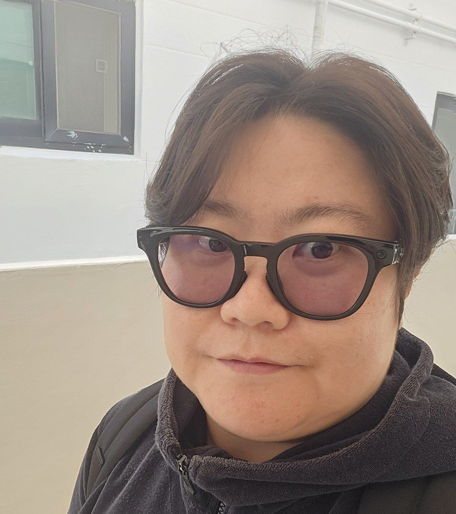
변색 렌즈를 끼운 실물 — 운동할 땐 선글라스 겸 이어폰이 된다
다만 공정하게 적자면, 잘하는 일도 뚜렷하다. 이 안경 최대의 장점은 책상이 아니라 운동장에 있다 — 변색 렌즈를 끼워 운동할 때 쓰면 선글라스와 이어폰이 한 번에 해결되고, 운동 측정까지 된다. 영어와 독일어로 시험해 본 실시간 동시통역은 기대보다 매끄러웠고, 걸으며 듣는 길안내도 편했다. 몸을 움직이는 동안, 이 안경은 이미 제 몫을 한다.
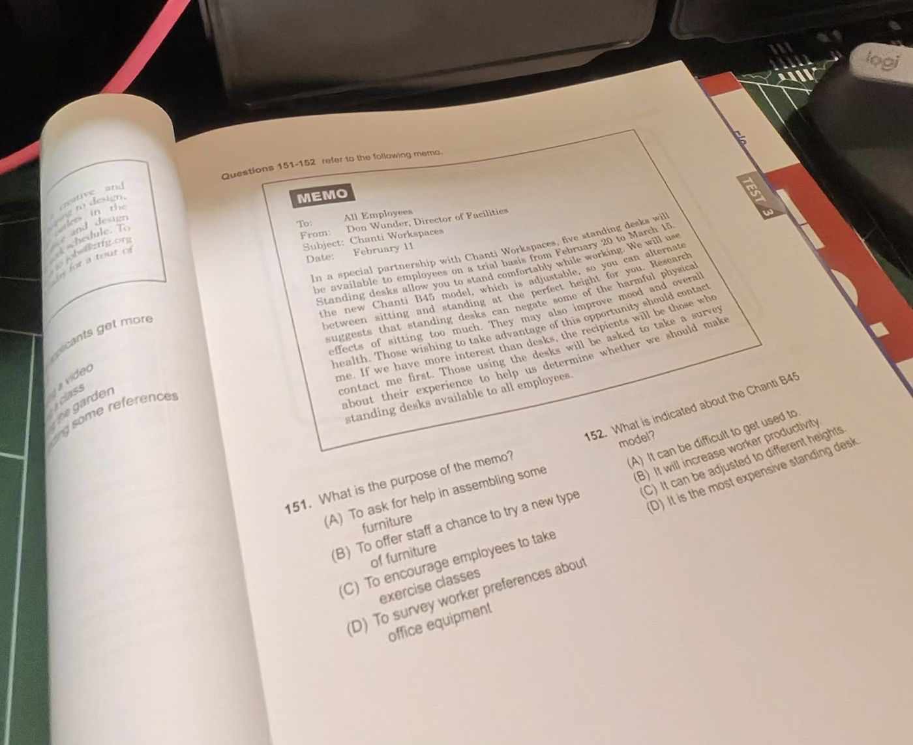
안경이 본 것 — 문제집 앞에서 "헤이 메타" (안경 카메라 촬영)
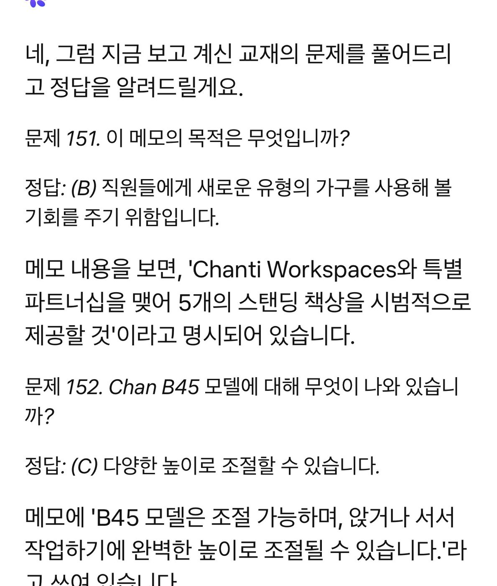
① 책상의 성적표 — 151 (B)·152 (C), 고유명사는 미심쩍다
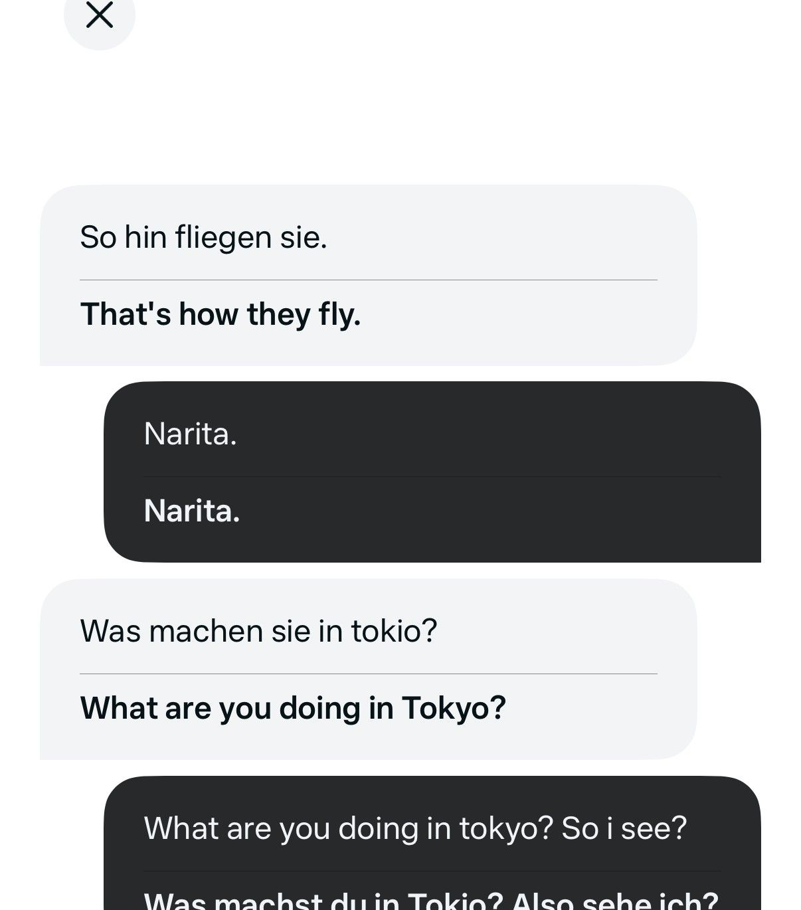
② 독일어↔영어 동시통역 — 기대보다 잘한다
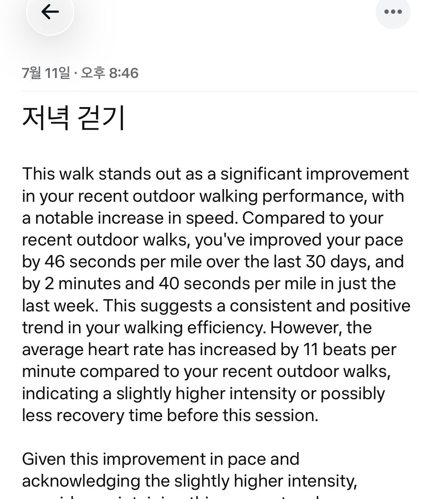
③ 저녁 걷기 리포트 — 페이스·심박 정리
그래서 이 물건을 서랍 안쪽에 넣을 생각은 없다. 방향은 맞다. 다만 지금 사는 것은 완성품이 아니라 예고편이라는 것. 맥시멀리스트는 예고편도 수집하는 사람이므로, 나는 기다리면서 쓰기로 했다.
실사용 요약
좋은 점 — 변색 렌즈+운동: 선글라스·이어폰·운동 측정을 안경 하나로 · 영·독 동시통역 준수 · 길안내 편리. 아쉬운 점 — 작은 글씨 텍스트 인식 · 문서 번역·독해는 아직. 한 줄 조언 — 운동하는 사람에게 먼저 권한다.
명랑 한 줄 평 — 운동장에서는 이미 쓸 만한 미래, 책상 앞에서는 아직 오는 중인 미래.
글: 편집장 박지민 — 물건은 호기심으로 들여다본다. 먼저 써 보고, 먼저 후회하고, 대신 알려 드린다. 사진: 직접 촬영 · 메타 AI 앱 갈무리
맥시멀리스트의 방 — 물건에도 근거를
21
신설 코너월간 집밥연구소 ①
NEW · HOME COOKING
NEW · 월간 집밥연구소 ① — 계절 채소 한 상
집밥연구소 with 가지 여름 가지 레시피 네 접시 · 글·요리 연구원 데이지 진
폭염 특집을 읽고 나면 저녁상 차리기가 더 아득해진다. 그래서 이번 호부터 밥상의 연구를 시작한다. 첫 손님은 여름의 채소, 가지 — 값싸고, 불 앞에 오래 서 있지 않아도 되고, 한여름의 몸에 순한 재료다. 연구원 데이지 진 님의 실험 기록을 사진과 함께 옮긴다.
재료 가지 1개, 대파 약간, 청양고추 1개 · 양념장 재래식 된장(1/2), 황설탕(1), 맛술(1), 진간장(1/2), 물(3), 후추·통깨 약간
가지를 약간 어슷하게 썬다. 대파와 청양고추는 잘게 다진다.
양념장을 만들고, 기름 두른 중불에 가지를 노릇하게 굽는다.
양념장을 가지 위에 골고루 끼얹어 자작하게 졸인다.
불을 끄고 잔열로 익힌 다음 밥 위에 가지런히 올린다.
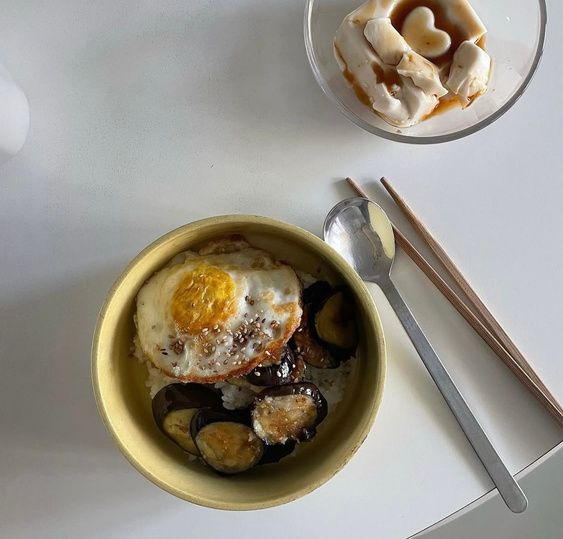
달걀후라이 얹어 완성
월간 집밥연구소 — 밥상에도 근거를
22
신설 코너월간 집밥연구소 ①
NEW · HOME COOKING
집밥연구소 with 가지 — 이어서
③ 가지솥밥
재료 가지 2개, 소고기 다짐육 150g, 쌀 1.5컵, 다진마늘 1/2T, 맛술 1/2T, 양조간장 2T, 올리브오일 1T, 대파 1/2대, 쪽파 약간 · 양념장 쪽파 반줌, 고춧가루(1/2), 매실청(1), 양조간장(3), 물(1), 참기름
쌀은 1시간 전 미리 씻어 10분 물에 담갔다 물기를 뺀다.
소고기는 핏물 제거 후 다진마늘·맛술·양조간장(1T)으로 밑간하고, 가지는 길게 반 갈라 도톰하게 썰어 간장(1T)에 절인다.
파기름에 소고기를 볶다가 가지를 넣어 80%쯤 익힌다.
솥에 쌀과 물 1.2컵으로 밥을 짓고 — 끓으면 약불 15분 — 밥물이 줄면 볶아둔 가지를 올려 5분 뜸을 들인다. 양념장은 취향껏!
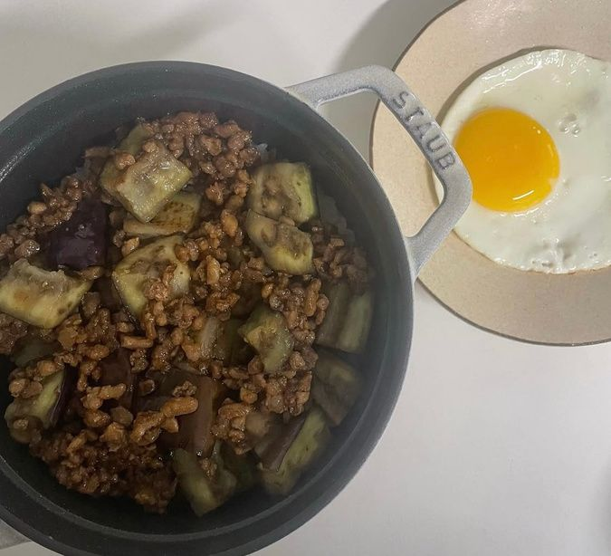
뜸이 다 든 가지솥밥 한 솥
④ 가지나물비빔밥과 가지야채구이
재료 가지 2개, 다진마늘 1/2T, 다진대파 1T, 국간장 2T, 참기름 1T, 깨소금 약간
가지는 5~6분 냄비에 찐 뒤, 키친타올로 물기를 걷고 길게 찢는다.
다진마늘·다진대파·양념을 넣고 조물조물 무친다.
가지나물만 넣고 달걀후라이·고추장 얹어 비벼도 좋다. (버섯이나 하얗게 무친 콩나물을 더하면 더 맛있게!)
가지야채구이는 다른 야채와 함께 소금·후추만으로 밑간해 에어프라이어에 10~15분 굽는다.
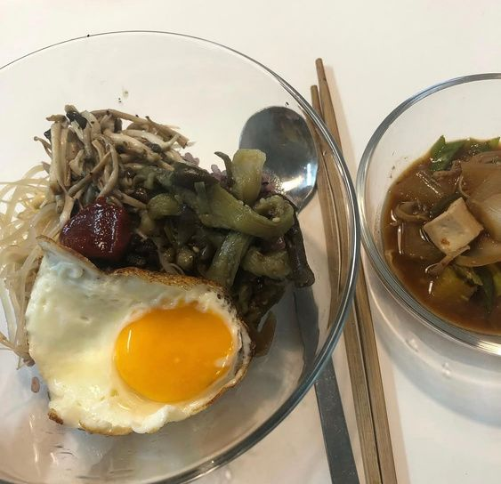
가지나물비빔밥
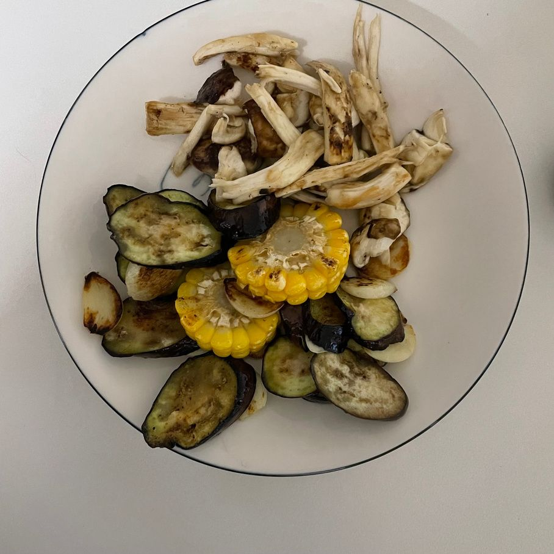
가지야채구이
연구 노트 — 가지는 기름을 만나면 부드러워지고, 된장·간장 같은 발효 양념과 특히 잘 어울린다. 다음 호의 재료는 데이지 진 님의 장바구니가 정한다. 제보·질문: justice_park@kakao.com
글·요리·사진: 데이지 진 — 28년차 특수교사. 「집밥연구소」에 다정하고 단정한 식탁을 연재한다. 언젠가는 장애인 이야기와 이민·다문화, 그리고 책 이야기도 풀어놓고 싶다는 것이 본인의 귀띔.
월간 집밥연구소 — 밥상에도 근거를
23
신설 코너명랑 뷰티 ① — 여름 특집
NEW · BEAUTY
NEW · 명랑 뷰티 ① — 여름 특집
무너지지 않는 여름 땀의 계절, 화장을 지키는 1 : 3의 비율
아침 일곱 시의 정성이 정오의 땀 앞에서 허무하게 무너지는 계절이다. 그렇다고 맨얼굴로 나설 수는 없는 날들 — 여름의 답은 더 바르는 것이 아니라, 적게, 그러나 붙게 바르는 것이다.
비율의 발견
열쇠는 파우치 속에 이미 있다. 재생크림이다. 베이스 전에 얇게 펴 바르거나, 비비크림 혹은 파운데이션에 소량을 섞는다. 크림이 피부의 요철을 매끈하게 메워 주면 그 위의 화장은 쉽게 달아나지 않고, 두껍게 바르지 않아도 은은한 윤광이 돈다. 쿠션파라면 두드리기 전에 얇게 한 겹 — 그것으로 충분하다.
아티스트의 계량 — 1 : 3
재생크림 1에 비비크림(또는 파운데이션) 3. 계절과 피부 타입, 화장법에 따라 조금씩 가감한다.
아침의 다이어트
여름 아침의 기초는 가벼울수록 좋다. 세안 후 토너, 에센스, 크림 — 내 피부 타입에 맞는 것만 남기고 덜어낸다. 겹이 얇아야 화장도 얇게, 그리고 오래 간다.
밤의 의식
그리고 무엇보다 — 화장은 바르는 일보다 지우는 일이 중요하다. 저녁의 꼼꼼한 이중 세안.
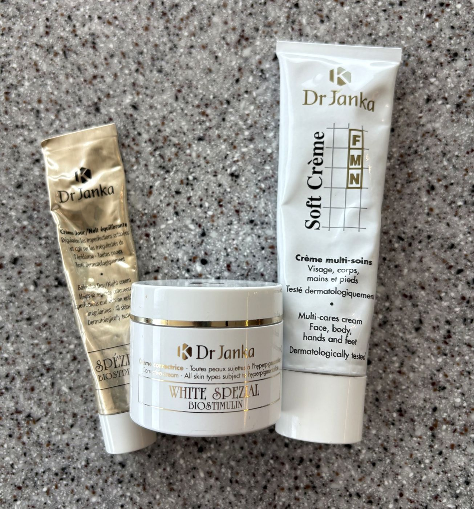
아티스트의 선반 — 여름의 도구들
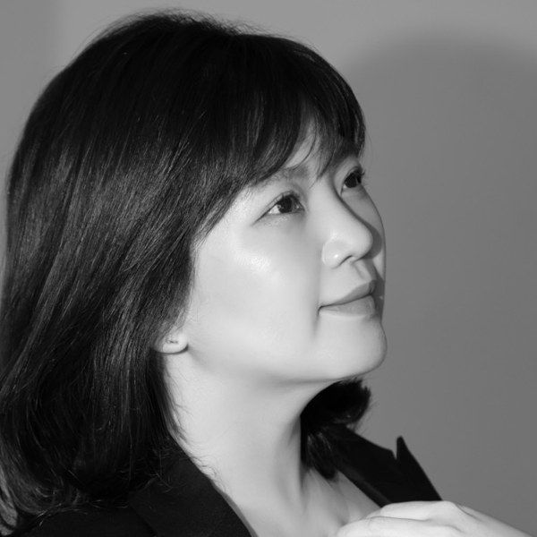
글·사진: 아르백 — 메이크업 아티스트. 수많은 얼굴의 여름을 지켜 온 손끝의 기록을 「명랑 뷰티」에 연재한다. 다음 호 — 가을 환절기, 들뜨지 않는 피부
명랑 뷰티 — 피부에도 근거를
24
SUBSCRIBE · 구독 안내
매달, 근거 있는 명랑을 우편함이 아니라 메일함으로.
「월간 명랑사회」는 종이와 웹으로 함께 발행됩니다. 홈페이지에서 이메일을 남겨 주시면, 매달 새 호가 나오는 날 뉴스레터로 소식을 보내 드립니다. 지난 호는 웹에서 언제든 무료로 읽을 수 있습니다.
www.myeongrang.org
구독 신청 · 전 호 열람 · PDF 내려받기 문의 justice_park@kakao.com
지난 호 ARCHIVE
VOL.01 · 2026.06
청년은 정말 결혼을 포기했을까 — 마음이 아니라 조건을 물었던 창간호
VOL.02 · 2026.07
폭염은 평등하지 않다 — 같은 35도, 다른 여름 (이번 호)
사회를 명랑하게, 근거로 말합니다
월간 명랑사회VOL.02 · 2026.07
다음 호 / NEXT
다음 호 예고 · VOL.03 (2026년 8월)
내 삶을, 공유할 수 있는가
이 질문에서 시작된 마을 — 스칸디나비아 시니어 코하우징
은퇴하기 전에 이웃을 만나 취미와 밥상을 공유하고, 함께 살 집은 국가가 거듭니다. 스웨덴·핀란드·덴마크가 30년 넘게 가꿔 온 시니어 코하우징 — 8월호 특집 「이웃부터 짓다」가 이 질문에 법령과 데이터로 답합니다. 그리고 그 곁의 코너들도 저마다 다음 이야기를 물고 어김없이 돌아옵니다 — 무엇이 실릴지는 책을 펴는 날의 즐거움으로 남겨 둡니다. 하나만 미리 귀띔하자면, 벽을 오르는 사람들의 세계 — 클라이밍 이야기가 준비되고 있습니다.
창간 특집 연재 · 일본 미술기행 ③
론 뮤익
도쿄 모리미술관. 18년 만의 일본 대규모 개인전, 극사실 조각 11점. 사람보다 훨씬 크거나 훨씬 작은 몸들 앞에서 — 크기가 만드는 정서에 관하여, 한 사람의 관람자로 따라간다.